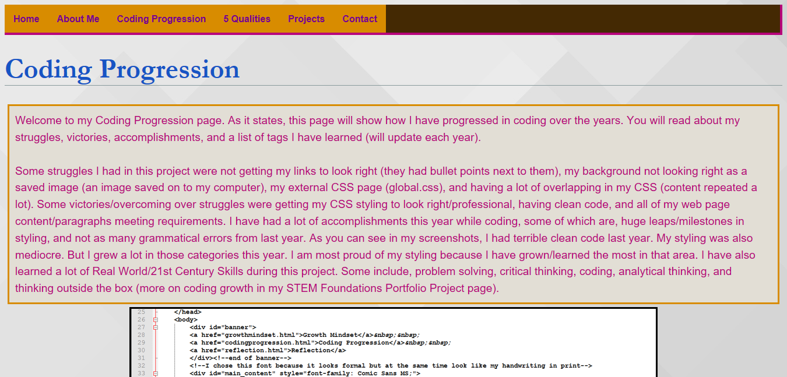
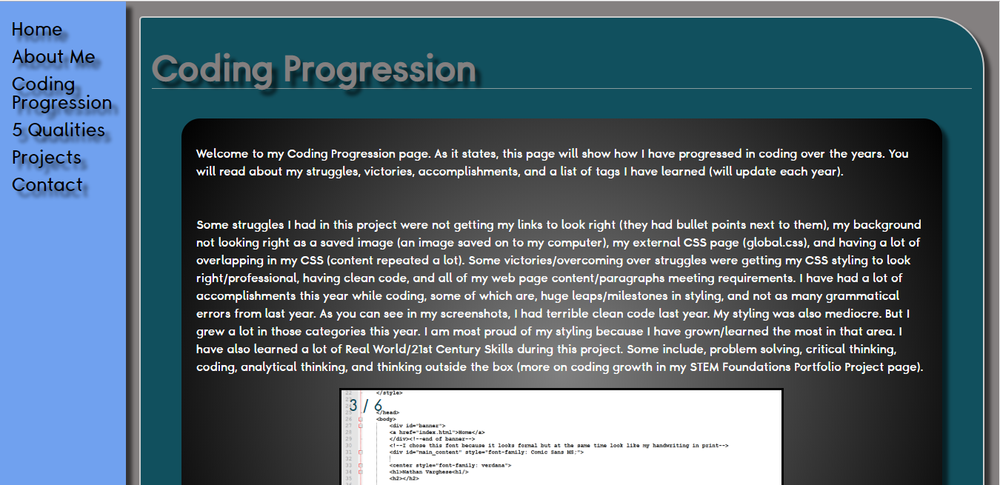
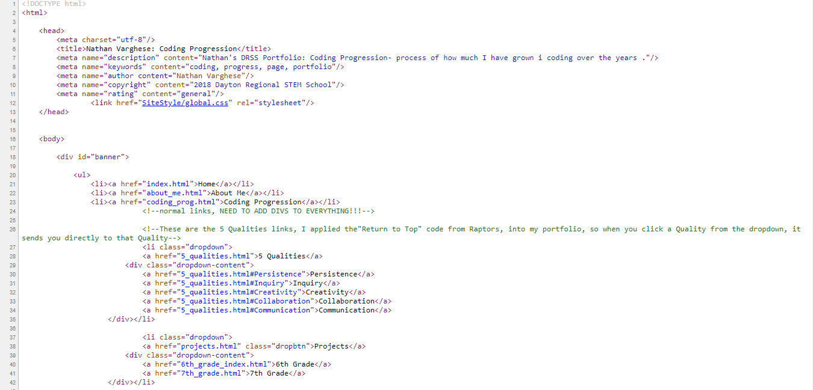
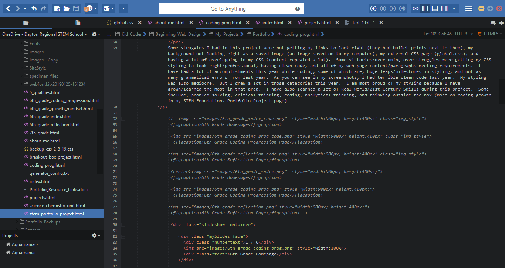

Welcome to my Coding Progression page! As it states, this page will show how I have progressed in coding over the years. You will read about my struggles, victories, accomplishments, and a list of tags I have learned (will update each year).
In my 8th grade year, I’ve had a few struggles and successes while coding my digital portfolio. Though I had struggles and successes, I had a lot of growth in them. A struggle I had was not getting my video to work on my 8th grade Plate Tectonics Project webpage. I had struggled for nearly an hour trying to fix it but on the browser, but it kept saying “invalid source”, I checked the filename, the file path, and where the video was in my root directory, but to no avail. I overcame this struggle by using the video tag from my Aquamaniacs page (a practice website to learn how to use new code) and pasted that into my portfolio. Turns out, something was wrong with my video tag, and not the video itself! In this struggle I was able to grow a lot in critical thinking, because my problem couldn’t be solved in one or two steps. A few successes I had were: I was able to add a sidebar, using and styling using an article tag (more on that later), and achieving a professional color scheme. Probably my biggest growth this year was my ability to use the article tag, the article tag allowed me to style each individual paragraph I had on my website. I was able to add a black gradient around my paragraph, add shadowing to the sides of it, and rounding the corners on the background of the paragraph. You can observe growth in styling separate parts of my webpage in my slideshow comparing 6-8th Coding Progression pages. Overall, in my 8th grade year I feel my greatest success was having a professional color scheme, styling separate parts of my webpage (like each paragraph, sidebar and headings), and maintaining clean code. I feel confident now going into my 9th grade year to bring out a new stage of my portfolio.
1 / 6
6th Grade Coding Progression Page
2 / 6

7th Grade Coding Progression Page
3 / 6

8th Grade Coding Progression Page
4 / 6
6th Grade Coding Progression Page Code
5 / 6

7th Grade Coding Progression Page Code
6 / 6

8th Grade Coding Progression Page Code
❮
❯
| Tag |
What it does |
| <br/> |
line break |
| <center> |
Content inside of this will be entered in web browser |
| <div> |
Divides your content and can style anything inside of this differnet from all other content. |
| <body-style-background= put content here> |
You can add a background to your page. Basically it is just to style the background. |
| <img src=" "> |
You can insert a image in the quotation marks. |
| <style> |
Can style certain parts of you page. |
| <html> |
Part of essential html language. |
| <head> |
Part of essential html language. |
| <body> |
Part of essential html language. |
| <a href=" "> |
link |
| <link href=" "> |
another type of link |
| <b> |
Bolds content in between this tag. But the strong tag is recommanded over the b tag, so blind people can hear what it is in audio.
|
| <h1> - <h6> |
These are heading, te smaller the number, the bigger the heading.
|
| @charset "utf-8" |
This is the beginning of a external css stylesheet. You need to have this for the computer to recognize you are creating an external css stylesheet.
|
| font-size; |
Changes size of font. |
| <meta> |
Optional tags that are invisible to the reader that are in the head property, they are useful if somene is inspecting your code
|
| font-style |
Changes font style. |
| <blockquote> |
Helps with quotes and citing stuff. |
| <cite> |
Cites author. |
| <em> |
Emphasizes/italicizes content./ |
| <i> |
Also like the b tag, it is not recomanded, for the same reason, but is equivelent to the em tag.
|
| <ol> |
Makes an ordered list (numbered). |
| <ul> |
Makes an unordered list (bulleted list). |
| <li> |
Adds bullet points or numbers in a ul and ol tags. |
| <!--content--> |
Helps with quotes and citing stuff. |
| <li> |
Adds bullet points or numbers in a ul and ol tags. |
| font-weight |
Changes thickness of font. |
| body { } |
The body selector is used in css. Whatever you put in it will work in the body.
|
| <title> |
Shows up in the Tab section. |
| id |
Style content by id. |
| article |
A tag that allows you to easily style sections of you websites
|
| nav |
An element where you put in your navigation bar, it substitutes div id="navbar"
|
| pre |
Adds a page break
|
| header |
I'ts like a footer, a small note
|
| footer |
Adds a footer to the bootom of you site, replaces div id="footer"
|